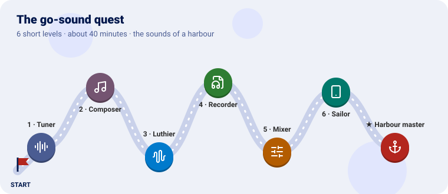
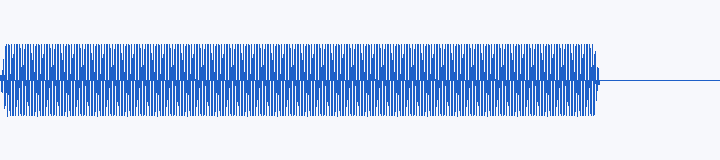
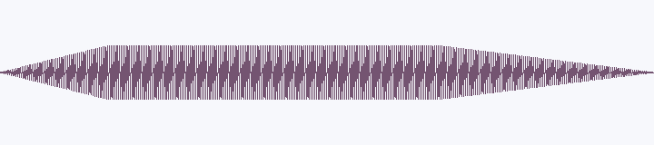
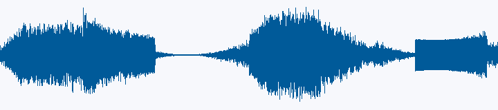
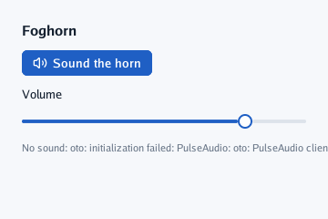
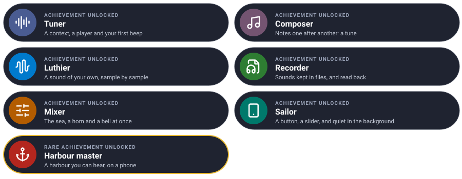

Make a harbour you can hear, one level at a time. Each level teaches one piece of go-sound and ends with a new sound.

We will build the sounds of a harbour: a beep, a tune, a foghorn made sample by sample, a file to keep it in, the sea and a bell mixed together, and an app with a button to sound the horn, which goes quiet when a phone puts it in the background.
Every level has the same shape: the idea (explained with something from everyday life), the code, a checkpoint to know it works, and an optional bonus. Each level leaves you with a program that plays.
You need Go 1.25 or later and speakers. Make a folder for the quest beside a copy of go-sound:
git clone https://github.com/akrck02/go-sound
mkdir harbour && cd harbour
go mod init example.com/harbour
go mod edit -require github.com/akrck02/go-sound@v0.0.0 -replace github.com/akrck02/go-sound=../go-sound
Each level is a main.go (and sometimes a second file) in this folder. Run it with:
go mod tidy # the first time
go run .
🔇 No sound? go-sound never stops your program for want of speakers:
context.Err()says why it is silent. Every level prints it. On Linux you need PulseAudio, PipeWire or ALSA running; see Troubleshooting.
The pictures of each checkpoint are the waves the code makes, drawn from its samples: what you should hear.
| Mission | Pieces | Time |
|---|---|---|
| Open the speakers and play a beep | NewContext, NewPlayer, Tone |
5 min |
Think of a record player. The context is the amplifier and the speakers: a program has exactly one, and switches it on once. A player is a turntable on it, and the stream is the record it plays. You can have many turntables on one amplifier, playing at once.
sound.Tone is the simplest record of all: one pure note.
package main
import (
"log"
"time"
sound "github.com/akrck02/go-sound"
)
func main() {
context, err := sound.NewContext(sound.Options{Name: "Foghorn"})
if err != nil {
log.Fatal(err)
}
<-context.Ready() // at once on a computer; after the first touch in a web page
beep, err := context.NewPlayer(sound.Tone(440, 500*time.Millisecond, 0.5))
if err != nil {
log.Fatal(err)
}
beep.Play()
time.Sleep(time.Second) // the program must live while the sound plays
if err := context.Err(); err != nil {
log.Print("no sound: ", err)
}
}
Play returns at once and the sound goes on by itself, so the program sleeps a second: if main
returned, the sound would stop with it.
You hear a clean A (440 vibrations a second) for half a second, with no click at its start or end: a tone rises and falls over a few milliseconds.

Play an A one octave up (twice the frequency) at a quarter of the volume.
beep, err := context.NewPlayer(sound.Tone(880, 500*time.Millisecond, 0.25))Learn more: Using go-sound
| Mission | Pieces | Time |
|---|---|---|
| Notes one after another | IsPlaying, Close |
5 min |
A tune is a queue at a bakery: each note waits for the one before it to finish. A player
tells you whether it is still playing with IsPlaying; when it says no, the next note is served.
package main
import (
"log"
"time"
sound "github.com/akrck02/go-sound"
)
// note is a pitch and how long it lasts.
type note struct {
frequency float64
length time.Duration
}
func main() {
context, err := sound.NewContext(sound.Options{Name: "Foghorn"})
if err != nil {
log.Fatal(err)
}
<-context.Ready()
tune := []note{{392, 300 * time.Millisecond}, {440, 300 * time.Millisecond}, {494, 300 * time.Millisecond}, {587, 600 * time.Millisecond}}
for _, step := range tune {
player, err := context.NewPlayer(sound.Tone(step.frequency, step.length, 0.4))
if err != nil {
log.Fatal(err)
}
player.Play()
for player.IsPlaying() { // wait for the note to end
time.Sleep(10 * time.Millisecond)
}
player.Close()
}
}
Close lets go of a player you will not use again.
Four notes going up, G A B D, the last one longer.
Play the first three notes at the same time instead.
for _, frequency := range []float64{392, 494, 587} {
player, _ := context.NewPlayer(sound.Tone(frequency, time.Second, 0.25))
player.Play() // no waiting: three turntables on one amplifier
}
time.Sleep(1500 * time.Millisecond)| Mission | Pieces | Time |
|---|---|---|
| A foghorn, made sample by sample | Stream, Format, Rewinder, SetLoop |
10 min |
A luthier makes instruments by hand. Here you make one in code: a stream is anything that can
answer two questions — how is your sound written? (Format) and give me the next samples
(Read). A sample is a number from −1 to 1: how far the speaker’s cone is pushed at that instant.
48,000 of them make a second of sound.
A foghorn is a low note with overtones (which make it rough), swelling in and fading out.
foghorn.go:
package main
import (
"io"
"math"
sound "github.com/akrck02/go-sound"
)
// foghorn is a stream of its own: a low, rough note that swells and fades, as a foghorn does.
type foghorn struct {
rate int // frames a second
frames int // how long it lasts, in frames
position int // the next frame to read
pitch float64 // its note, in hertz
}
func newFoghorn(rate int, seconds, pitch float64) *foghorn {
return &foghorn{rate: rate, frames: int(seconds * float64(rate)), pitch: pitch}
}
// Format says the samples are mono, at the foghorn's rate: the context turns them into stereo.
func (horn *foghorn) Format() sound.Format { return sound.Format{SampleRate: horn.rate, Channels: 1} }
// Read writes as many frames as fit, and io.EOF once the horn has sounded.
func (horn *foghorn) Read(samples []float32) (int, error) {
written := 0
for written < len(samples) && horn.position < horn.frames {
seconds := float64(horn.position) / float64(horn.rate)
phase := 2 * math.Pi * horn.pitch * seconds
// a fundamental and two overtones make it rough
wave := math.Sin(phase) + 0.5*math.Sin(2*phase) + 0.25*math.Sin(3*phase)
samples[written] = float32(0.3 * wave * horn.envelope(seconds))
written++
horn.position++
}
if horn.position >= horn.frames {
return written, io.EOF
}
return written, nil
}
// envelope is how loud the horn is at a moment: it swells over half a second and fades over one.
func (horn *foghorn) envelope(seconds float64) float64 {
length := float64(horn.frames) / float64(horn.rate)
return math.Min(1, math.Min(seconds/0.5, (length-seconds)/1.0))
}
// Rewind starts it again, so a player can loop it.
func (horn *foghorn) Rewind() error {
horn.position = 0
return nil
}
main.go:
package main
import (
"log"
"time"
sound "github.com/akrck02/go-sound"
)
func main() {
context, err := sound.NewContext(sound.Options{Name: "Foghorn"})
if err != nil {
log.Fatal(err)
}
<-context.Ready()
horn, err := context.NewPlayer(newFoghorn(context.SampleRate(), 3, 110))
if err != nil {
log.Fatal(err)
}
horn.SetLoop(true) // over and over: it rewinds at its end
horn.Play()
time.Sleep(10 * time.Second)
}
The horn is mono (one channel) and the context plays stereo at its own rate: it converts the stream as it reads it, so a stream can be written in whatever format is simplest.
A deep, buzzing horn that swells for half a second, holds, and fades, every three seconds.

Make it a minor third lower, and slower to fade.
Learn more: Streams
| Mission | Pieces | Time |
|---|---|---|
| Keep the horn in a WAV file and play it back | wav.Decode |
8 min |
A WAV file is a box of samples with a label on the lid: the label (the header) says how fast and how many channels; the rest is the samples one after another. Programs ship their sounds as files and decode them back into streams.
Keep foghorn.go. Add wavfile.go, which writes any stream into a box:
package main
import (
"encoding/binary"
"errors"
"io"
"math"
"os"
sound "github.com/akrck02/go-sound"
)
// saveWAV writes a whole stream into a WAV file of 16-bit samples: a short header, then the
// samples one after another.
func saveWAV(path string, stream sound.Stream) error {
format := stream.Format()
var samples []int16
buffer := make([]float32, 4096*format.Channels)
for {
count, err := stream.Read(buffer)
for _, sample := range buffer[:count] {
samples = append(samples, int16(math.Max(-1, math.Min(1, float64(sample)))*32767))
}
if errors.Is(err, io.EOF) {
break
}
if err != nil {
return err
}
}
file, err := os.Create(path)
if err != nil {
return err
}
defer file.Close()
dataSize := uint32(len(samples) * 2)
header := []any{
[4]byte{'R', 'I', 'F', 'F'}, 36 + dataSize, [4]byte{'W', 'A', 'V', 'E'},
[4]byte{'f', 'm', 't', ' '}, uint32(16), uint16(1), uint16(format.Channels), uint32(format.SampleRate),
uint32(format.SampleRate * format.Channels * 2), uint16(format.Channels * 2), uint16(16),
[4]byte{'d', 'a', 't', 'a'}, dataSize,
}
for _, field := range header {
if err := binary.Write(file, binary.LittleEndian, field); err != nil {
return err
}
}
return binary.Write(file, binary.LittleEndian, samples)
}
And main.go:
package main
import (
"bytes"
"log"
"os"
"time"
sound "github.com/akrck02/go-sound"
"github.com/akrck02/go-sound/wav"
)
func main() {
// keep the foghorn in a file, once
if err := saveWAV("foghorn.wav", newFoghorn(22050, 3, 110)); err != nil {
log.Fatal(err)
}
// read it back, as a program reads the sounds it ships with
file, err := os.ReadFile("foghorn.wav")
if err != nil {
log.Fatal(err)
}
stream, err := wav.Decode(bytes.NewReader(file))
if err != nil {
log.Fatal(err)
}
log.Printf("%d frames a second, %d channel(s)", stream.Format().SampleRate, stream.Format().Channels)
context, err := sound.NewContext(sound.Options{Name: "Foghorn"})
if err != nil {
log.Fatal(err)
}
<-context.Ready()
player, err := context.NewPlayer(stream)
if err != nil {
log.Fatal(err)
}
player.SetVolume(0.5)
player.Play()
time.Sleep(4 * time.Second)
}
A file foghorn.wav of about 130 KB appears in the folder, the program prints
22050 frames a second, 1 channel(s), and you hear the horn at half the volume. Open the file in
any audio player: it is the same horn.
Programs for phones and web pages have no files beside them. Embed the WAV.
import _ "embed"
//go:embed foghorn.wav
var foghornFile []byte
stream, err := wav.Decode(bytes.NewReader(foghornFile))Learn more: Sound files
| Mission | Pieces | Time |
|---|---|---|
| The sea, a horn and a bell at the same time | several players, SetVolume, Position |
8 min |
A mixing desk has a fader for each instrument. Each player is one: its own volume, its own start and stop, and the context adds them all into one sound for the speakers.
The sea is noise, smoothed so it rumbles instead of hissing, rising and falling every six seconds. It never ends, so it needs no rewinding to loop.
Keep foghorn.go. Add sea.go:
package main
import (
"math"
"math/rand/v2"
sound "github.com/akrck02/go-sound"
)
// sea is endless noise that rises and falls like waves: it never ends, so it needs no Rewind.
type sea struct {
rate int
position int
random *rand.Rand
last float64 // the noise is smoothed, so it rumbles instead of hissing
}
func newSea(rate int) *sea { return &sea{rate: rate, random: rand.New(rand.NewPCG(1, 2))} }
func (water *sea) Format() sound.Format { return sound.Format{SampleRate: water.rate, Channels: 1} }
func (water *sea) Read(samples []float32) (int, error) {
for index := range samples {
seconds := float64(water.position) / float64(water.rate)
swell := 0.5 + 0.5*math.Sin(2*math.Pi*seconds/6) // a wave every six seconds
water.last += 0.05 * (water.random.Float64()*2 - 1 - water.last)
samples[index] = float32(water.last * swell * 2)
water.position++
}
return len(samples), nil
}
main.go:
package main
import (
"fmt"
"log"
"time"
sound "github.com/akrck02/go-sound"
)
func main() {
context, err := sound.NewContext(sound.Options{Name: "Harbour"})
if err != nil {
log.Fatal(err)
}
<-context.Ready()
rate := context.SampleRate()
waves, _ := context.NewPlayer(newSea(rate)) // three players: the context mixes them
horn, _ := context.NewPlayer(newFoghorn(rate, 3, 110))
bell, _ := context.NewPlayer(sound.Tone(1320, 800*time.Millisecond, 0.3))
waves.SetVolume(0.6)
waves.Play()
for second := 0; second < 12; second++ {
if second%6 == 0 {
horn.Play() // a horn every six seconds; Play starts it again once it has ended
}
if second%4 == 2 {
bell.Play()
}
fmt.Printf("%2d s horn at %v\n", second, horn.Position().Round(100*time.Millisecond))
time.Sleep(time.Second)
}
}
Position tells how far into a sound what you hear now is: what was read, minus what still
waits in the system’s buffers. A film’s pictures follow it to stay in time with its sound.
Waves come and go; a horn sounds at 0 and 6 seconds, a bell at 2, 6 and 10. The terminal counts the seconds and the horn’s position.

Make the waves come twice as often and the sea louder, but keep the bell quiet.
| Mission | Pieces | Time |
|---|---|---|
| A button to sound the horn, and quiet in the background | go-ui, Suspend, Resume |
8 min |
A polite app is a sailor who stops whistling when he goes ashore: when the phone puts it in the
background (another app, the screen locked), it goes quiet, and plays again when it comes back.
go-ui’s window tells you both moments: Options.Hidden and Options.Shown.
This level needs go-ui and go-renderer beside go-sound (go-ui’s Get started):
git clone https://github.com/akrck02/go-renderer ../go-renderer
git clone https://github.com/akrck02/go-ui ../go-ui
go mod edit -require github.com/akrck02/go-ui@v0.0.0 -replace github.com/akrck02/go-ui=../go-ui
go mod edit -require github.com/akrck02/go-renderer@v0.0.0 -replace github.com/akrck02/go-renderer=../go-renderer
Keep foghorn.go, and replace main.go:
package main
import (
"flag"
"log"
"time"
sound "github.com/akrck02/go-sound"
ui "github.com/akrck02/go-ui"
"github.com/akrck02/go-ui/window"
)
func main() {
options := window.Options{Title: "Foghorn"}
options.RegisterFlags(flag.CommandLine)
flag.Parse()
context, err := sound.NewContext(sound.Options{Name: "Foghorn"})
if err != nil {
log.Fatal(err)
}
horn, err := context.NewPlayer(newFoghorn(context.SampleRate(), 3, 110))
if err != nil {
log.Fatal(err)
}
volume := float32(0.8)
// on a phone: quiet in the background, and back when the app returns
options.Hidden = func() { context.Suspend() }
options.Shown = func() { context.Resume() }
err = window.Run(options, func(screen *ui.Context) {
screen.Box(ui.Layout{Direction: ui.Vertical, Padding: ui.Pad(24), Gap: 12, Width: ui.Grow()}, func() {
screen.Heading("Foghorn")
if screen.PrimaryIconButton("volume-2", "Sound the horn") {
horn.Rewind()
horn.Play()
}
screen.Label("Volume")
if screen.Slider("volume", &volume, 0, 1) {
horn.SetVolume(float64(volume))
}
if horn.IsPlaying() {
screen.Caption("Sounding…")
screen.RequestFrame(100 * time.Millisecond) // look again soon: the sound ends on its own
}
if err := context.Err(); err != nil {
screen.Caption("No sound: " + err.Error())
}
})
})
if err != nil {
log.Fatal(err)
}
}
The interface is drawn again only when something happens; while the horn sounds, RequestFrame
asks to look again in a tenth of a second, so “Sounding…” goes away when it ends.
A window with a button and a volume slider; the button sounds the horn. If there is no sound, the window says why under the slider.

Package it for Android with go-ui-android’s tool and put the app in the background while the horn sounds: it stops, and plays on when you come back.
go run github.com/akrck02/go-ui-android/cmd/go-ui-apk -name Foghorn -id io.example.foghorn .
adb install foghorn.apkLearn more: On a phone
Put it all together in the app: the sea always playing quietly behind, the horn on its button, and a second button that rings the bell. A switch turns the sea on and off.
Hint: three players made once, before
window.Run. The sea loops withPlayonce and never ends;ui.Toggleedits abool, and when it changes,PlayorPausethe sea.
waves, _ := context.NewPlayer(newSea(context.SampleRate()))
bell, _ := context.NewPlayer(sound.Tone(1320, 800*time.Millisecond, 0.3))
waves.SetVolume(0.4)
waves.Play()
seaOn := true
// inside the window's function
if screen.Button("Ring the bell") {
bell.Rewind()
bell.Play()
}
if screen.Toggle("The sea", &seaOn) {
if seaOn {
waves.Play()
} else {
waves.Pause()
}
}
You made sounds from nothing, kept them in files, mixed them and put them in an app.
| Idea | Difficulty | Hint |
|---|---|---|
| A metronome | ⭐ | A short Tone played every time.Second * 60 / beats |
| Seagulls | ⭐⭐ | A stream whose pitch slides up and down: change pitch inside Read |
| Music from an Ogg file, looping | ⭐⭐ | vorbis.Decode of an embedded file, SetLoop(true) (sound files) |
| Sounds for a go-ui-android app | ⭐⭐ | go-ui-android’s gallery plays a note the same way |
| A sound for a film | ⭐⭐⭐ | Not yet: see the roadmap |
| You see | Why, and what to do |
|---|---|
no sound: oto: initialization failed: PulseAudio…; ALSA… |
No sound server or device: start PulseAudio or PipeWire, or plug in speakers. The program runs on, silent |
Lines starting ALSA lib … cannot find card '0' |
The same, said by ALSA itself; harmless |
| The program ends before the sound | main returned: Play does not wait. Sleep, or wait for IsPlaying |
sound: a program has one context; keep the first |
NewContext was called twice; make one and pass it around |
sound: the stream cannot start again |
Looping a stream with no Rewind; give it one, or decode from a bytes.Reader |
| Crackles | Try Options{Latency: 100 * time.Millisecond}, or fewer players at once |
| Silent in a web page | Browsers allow sound only after the first touch or key: wait on context.Ready() |